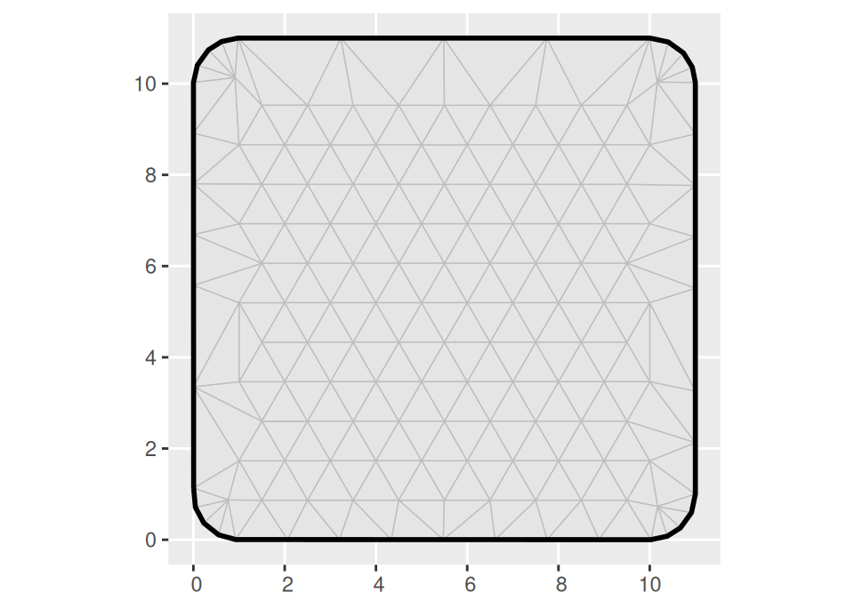
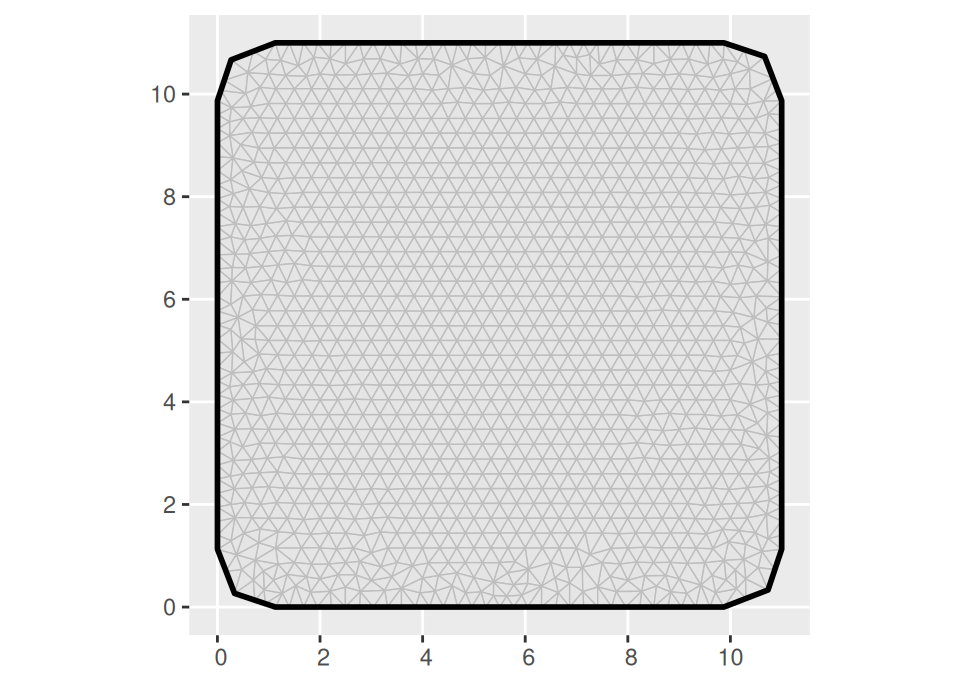
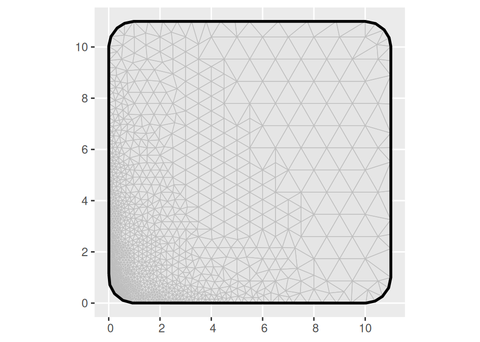
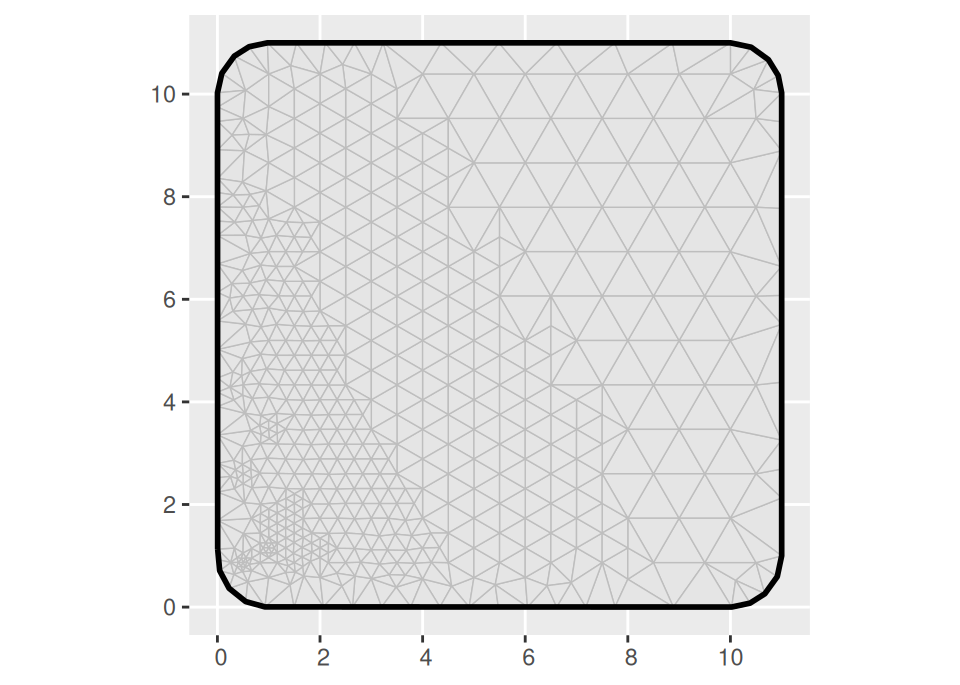
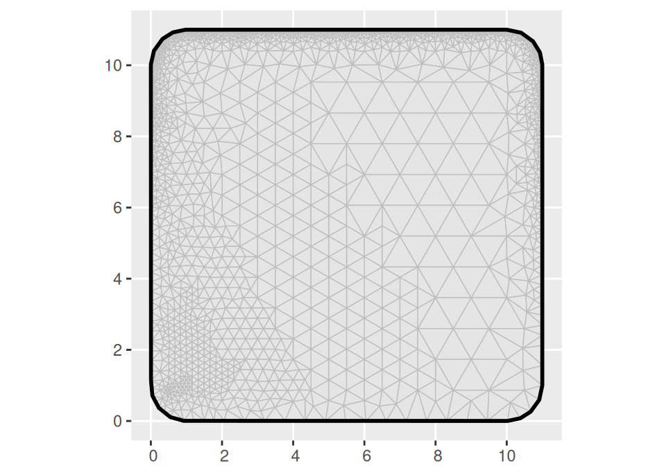
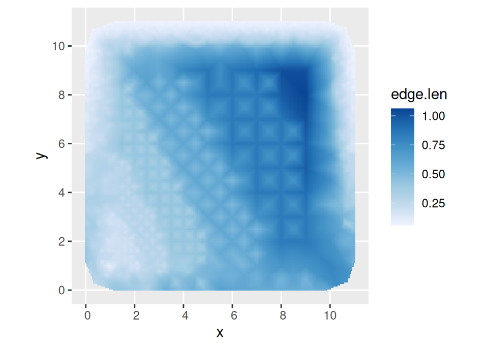
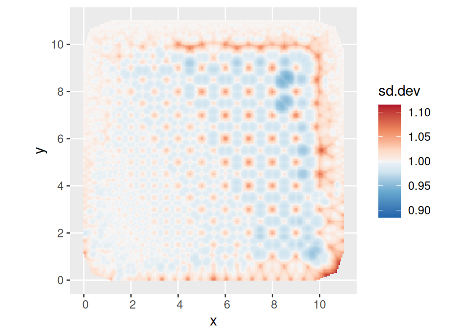
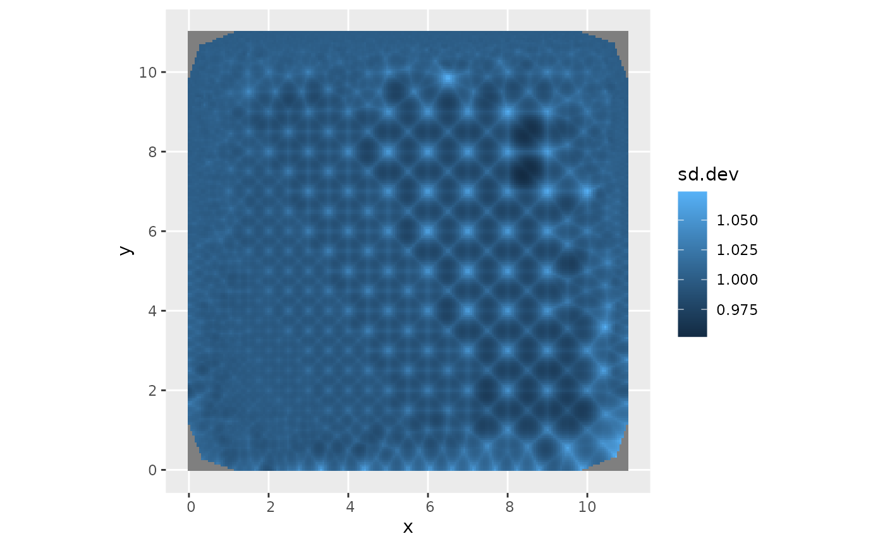

Spatially varying mesh quality
Source:vignettes/articles/variable_mesh_quality.Rmd
variable_mesh_quality.RmdUpdated version of the 2018 blog post Spatially
varying mesh quality. Needs fmesher version
0.2.0.9009 or later.
The fmesher package has several features that aren’t widely known. The code started as an implementation of the triangulation method detailed in Hjelle and Dæhlen, “Triangulations and Applications” (2006), which includes methods for spatially varying mesh quality.1 Over time, the interface and feature improvements focused on robustness and calculating useful mesh properties, but the more advanced mesh quality features are still there!
The algorithm first builds a basic mesh, including any points the user specifies, as well as any boundary curves (if no boundary curve is given, a default boundary will be added), connecting all the points into a Delauney triangulation.
After this initial step, mesh quality is decided by two criteria:
- Minimum allowed angle in a triangle
- Maximum allowed triangle edge length
As long as any triangle does not fulfil the criteria, a new mesh point is added in a way that is guaranteed to locally fix the problem, and a new Delaunay triangulation is obtained. This process is repeated until all triangles fulfil the criteria. In perfect arithmetic, the algorithm is guaranteed to converge as long as the minimum angle criterion is at most 21 degrees, and the maximum edge length criterion is strictly positive.
A basic mesh with regular interior triangles can be created as follows:
library(ggplot2)
library(fmesher)
loc <- as.matrix(expand.grid(1:10, 1:10))
bnd <- fm_nonconvex_hull_inla(loc, convex = 1, concave = 10)
mesh1 <- fm_rcdt_2d_inla(
loc = loc,
boundary = bnd,
refine = list(max.edge = Inf)
)
ggplot() +
geom_fm(data = mesh1)
#> Warning in fm_as_sfc.fm_segm(data): fm_as_sfc currently only supports
#> (multi)linestring output
The fm_nonconvex_hull_inla function creates a polygon to
be used as the boundary of the mesh, extending the domain by a distance
convex from the given points, while keeping the outside
curvature radius to at least concave. In this simple
example, we used the method fm_rcdt_2d_inla, which is the
most direct interface to fmesher. The
refine = list(max.edge = Inf) setting makes
fmesher enforce the default minimum angle criterion (21
degrees) but ignore the edge length criterion. To get smaller triangles,
we change the max.edge value:
mesh2 <- fm_rcdt_2d_inla(
loc = loc,
boundary = bnd,
refine = list(max.edge = 0.5)
)
ggplot() +
geom_fm(data = mesh2) +
coord_sf(default = TRUE)
It is often possible and desirable to increase the minimum allowed angle to achieve smooth transitions between small and large triangles (values as high as 26 or 27, but almost never as high as 35, may be possible). Here we will instead focus on the edge length criterion, and make that spatially varying.
We now define a function that computes our desired maximal edge
length as a function of location, and feed the output of that to
fm_rcdt_2d_inla using the quality.spec
parameter instead of max.edge:
qual_loc <- function(loc) {
pmax(0.05, (loc[, 1] * 2 + loc[, 2]) / 16)
}
mesh3 <- fm_rcdt_2d_inla(
loc = loc,
boundary = bnd,
refine = list(max.edge = Inf),
quality.spec = list(
loc = qual_loc(loc),
segm = qual_loc(bnd$loc)
)
)
ggplot() +
geom_fm(data = mesh3) +
coord_sf(default = TRUE)
This gave a smooth transition between large and small triangles!
We can also use different settings on the boundary,
e.g. NA_real_ or Inf to make it not care about
edge lengths near the boundary:
qual_bnd <- function(loc) {
rep(Inf, nrow(loc))
}
mesh5 <- fm_rcdt_2d_inla(
loc = loc,
boundary = bnd,
refine = list(max.edge = Inf),
quality.spec = list(
loc = qual_loc(loc),
segm = qual_bnd(bnd$loc)
)
)
ggplot() +
geom_fm(data = mesh5) +
coord_sf(default = TRUE)
#> Warning in fm_as_sfc.fm_segm(data): fm_as_sfc currently only supports
#> (multi)linestring output
We can also make more complicated specifications, but beware of
asking only for reasonable triangulations; When experimenting, I
recommend setting the max.n.strict and max.n
values in the refine parameter list, that prohibits adding
infinitely many triangles!
qual_bnd <- function(loc) {
pmax(0.1, 1 - abs(loc[, 2] / 10)^2)
}
mesh5 <- fm_rcdt_2d_inla(
loc = loc,
boundary = bnd,
refine = list(
max.edge = Inf,
max.n.strict = 5000
),
quality.spec = list(
loc = qual_loc(loc),
segm = qual_bnd(bnd$loc)
)
)
ggplot() +
geom_fm(data = mesh5) +
coord_sf(default = TRUE)
#> Warning in fm_as_sfc.fm_segm(data): fm_as_sfc currently only supports
#> (multi)linestring output
The fm_assess function may also provide some
insights:
out <- fm_assess(mesh5,
spatial.range = 5,
alpha = 2,
dims = c(200, 200)
)
#> Warning in fm_qinv(Q): Asymmetric matrix A detected, but only lower left
#> triangle will be used.
print(names(out))
#> [1] "sd" "sd.dev" "sd.bound" "edge.len" "geometry"
ggplot() +
geom_tile(
data = out,
aes(geometry = geometry, fill = edge.len),
stat = "sf_coordinates"
) +
coord_sf(default = TRUE)
A “good” mesh should have sd.dev close to 1; this
indicates that the nominal variance specified by the continuous domain
model and the variance of the discretise model are similar.
ggplot() +
geom_tile(
data = out,
aes(geometry = geometry, fill = sd.dev),
stat = "sf_coordinates"
) +
coord_sf(default = TRUE) +
scale_fill_gradient(limits = range(out$sd.dev, na.rm = TRUE))
Here, we see that the standard deviation of the discretised model is
smaller in the triangle interiors than at the vertices, but the ratio is
close to 1, and more uniform where the triangles are small compared with
the spatial correlation length that we set to 5. The most
problematic points seem to be in the rapid transition between large and
small triangles. We can improve things by increasing the minimum angle
criterion:
mesh6 <- fm_rcdt_2d_inla(
loc = loc,
boundary = bnd,
refine = list(
min.angle = 30,
max.edge = Inf,
max.n.strict = 5000
),
quality.spec = list(
loc = qual_loc(loc),
segm = qual_bnd(bnd$loc)
)
)
out6 <- fm_assess(mesh6,
spatial.range = 5,
alpha = 2,
dims = c(200, 200)
)
#> Warning in fm_qinv(Q): Asymmetric matrix A detected, but only lower left
#> triangle will be used.
ggplot() +
geom_tile(
data = out6,
aes(geometry = geometry, fill = sd.dev),
stat = "sf_coordinates"
) +
coord_sf(default = TRUE) +
scale_fill_gradient(limits = range(out6$sd.dev, na.rm = TRUE))
Thesd.dev range has clearly decreased, and there is no
longer a band of high values near the upper right corner.
The number of additional vertices needed to accomplish this is small, as seen from the mesh object summaries:
mesh5
#> fm_mesh_2d object:
#> Manifold: R2
#> V / E / T: 1916 / 5410 / 3495
#> Euler char.: 1
#> Constraints: 335 boundary edges (1 group: 1), 0 boundary edges
#> Bounding box: (7.471455e-04,1.099925e+01) x (7.471455e-04,1.099925e+01)
#> Basis d.o.f.: 1916
mesh6
#> fm_mesh_2d object:
#> Manifold: R2
#> V / E / T: 1980 / 5606 / 3627
#> Euler char.: 1
#> Constraints: 331 boundary edges (1 group: 1), 0 boundary edges
#> Bounding box: (7.471455e-04,1.099925e+01) x (7.471455e-04,1.099925e+01)
#> Basis d.o.f.: 1980